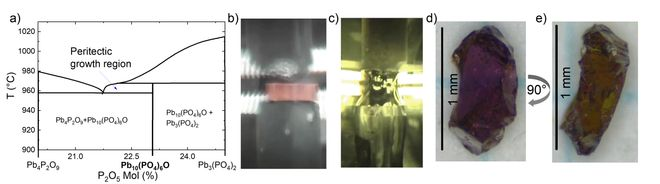
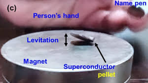
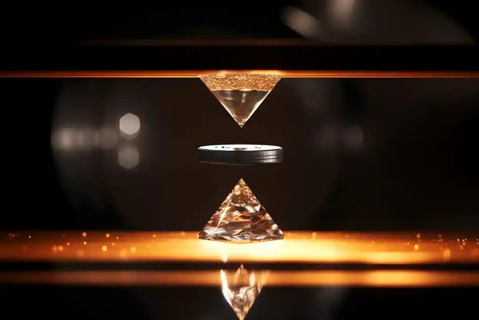
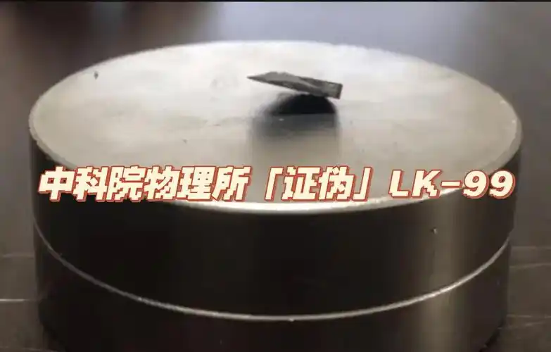

01
Multi-modal Inputs
Text, image, video, and graph signals enter one simulation workflow.
MicroWorld turns documents, images, videos, and graph signals into a runnable simulation pipeline. It builds event context, prepares simulation agents, runs cross-platform interactions, and outputs an analysis report together with detailed simulation records.

Paper figure: topology changes how agents update and whom they follow.
MicroWorld combines multimodal grounding with lightweight execution and topology-aware simulation mechanisms in both clustering and influence estimation.
Text, image, video, and graph signals enter one simulation workflow.
Incremental memory and compact runtime artifacts reduce unnecessary overhead.
Topology-aware simulation supports both threshold and LLM-keyword cluster drivers.
Directional influence is derived from topology instead of uniform pairwise assumptions.
Topology-aware coordination removes redundant updates and cuts token usage sharply as the workload grows.
PPR-based influence weighting keeps the simulation trajectory closer to the reference trend than the baseline run.
In the ECS-50 simulation, agents with similar opinion trajectories also begin from highly consistent states. Intra-group variance stays far below population-level variance, which exposes stable structural regularities in the update process.

Group-level trends, individual trajectories inside a representative group, and group proportions all indicate strong regularities in opinion updates.
Agents with similar opinion trajectories also start from similar initial states, so the grouping reflects real structure rather than random overlap.
The repository covers the full path from multimodal input to graph construction, topology-aware simulation, and report output.
MicroWorld parses event materials into graph structure and agent profiles, runs topology-aware simulation, and produces both a report and detailed run records.
The current site uses the LK-99 case to show how one workflow links multimodal input, simulation, and report generation.
This example combines article-style text, videos, and scientific discussion, making the full workflow easy to understand.
The demo starts from high-profile superconductivity claims and follows how discussion shifts as replication results and technical details appear.




One event can move through attention, debate, replication, and correction. The workflow keeps both the narrative outcome and the process behind it.
A multimodal event with fast amplification, visible role differences, and a clear correction cycle.
The project can be summarized in three connected layers.
Parse PDFs, text files, images, and videos, then extract usable event context for graph construction.
Build ontology, graph, entity prompts, social relation graph, and platform-ready simulation configuration.
Produce an analysis report, runtime records, memory traces, and topology snapshots.
The site focuses on the end-to-end path from input package to simulation artifacts.